Subsections
幾何学モデリング
Euslispは、３次元の幾何学モデルの内部表現としてBrep（境界表現）を採用している。
Brep内の要素はedge, plane, polygon, face, hole,やbodyクラスによって
表現される。
基本bodyの作成関数とbodyの合成関数は、これらのクラスの新しい
インスタンスを作る。
もっと属性を持った独自の幾何学クラスを使用するためには、
*edge-class*, *face-class*と*body-class*の特殊変数に
独自のクラスオブジェクトを設定すること。
Figure 9:
頂点とエッジと面の分類
|
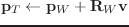
|
vplus vector-list [関数]
-
-
vector-listのすべての要素の合計を実数ベクトルとして
新しく作り、返す。
v+との違いは、vplusが2つ以上の引数について合計を計算し、
結果のベクトルが指定できない点である。
vector-mean vector-list [関数]
-
-
vector-listの平均ベクトルを返す。
triangle a b c &optional (normal #f(0 0 1)) [関数]
-
-
a, b, cは、2次元または3次元の実数ベクトルである。
normalは、a,b,cが置かれる平面の正規ベクトルである。
triangleはa,b,cで形作られる三角形の領域の2倍の大きさを返す。
normalと同じ方向から見たときにa,b,cが時計方向に回転する
ならば、triangleは正である。
言い換えると、もしtriangleが正ならば、
cはa-bの線分の左手側に位置し、
bはa-cの右手側に位置している。
triangle-normal a b c [関数]
-
-
a b cで定義される三角形に対して垂直方向の正規ベクトルを見つける。
vector-angle v1 v2 &optional (normal (v* v1 v2)) [関数]
-
-
2つのベクトルの角度を計算する。
これは次の式であらわされるatan(normal(v1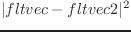v2), v1v2)。
v1,v2とnormalは正規ベクトルでなければならない。
normalが与えられないとき、v1,v2の共通垂線の正規ベクトルが
使用される。この場合、結果は0から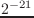までの範囲の正の角度になる。
符号付きの角度を得るためには、normalを指定しなければならない。
face-normal-vector vertices [関数]
-
-
同じ平面の上にあるベクトルのリストから面の正規化ベクトルを計算する。
farthest p points [関数]
-
-
3次元ベクトルのリストpointsの中からpより最も遠い点を捜す。
farthest-pair points [関数]
-
-
3次元ベクトルのリストpointsからもっとも遠い点の組を
捜す。
maxindex 3D-floatvec [関数]
-
-
3D-floatvecの3つの要素の中で絶対値が最大の要素の位置を捜す。
random-vector &optional (range 1.0) [関数]
-
-
3次元デカルト空間の中で同次的に分散されるランダムベクトルを発生する。
random-normalized-vector &optional (range 1.0) [関数]
-
-
3次元の正規化ランダムベクトルを返す。
random-vectors count range [関数]
-
-
rangeの大きさのランダムベクトルをcount個つくり、そのリストを返す。
line-intersection p1 p2 p3 p4 [関数]
-
-
p1, p2, p3, p4は、すべて2次元以上の実数ベクトルである。
p1-p2とp3-p4が平面上の2つの線分として定義される。
line-intersectionは、これらの2つの線分の交差する点のパラメータ（線分に置ける
交点の位置の比率）を2要素のリストで返す。3次元で使用するとき、
p1, p2, p3, p4は共通平面内になければならない。
collinear-p p1 p2 p3 &optional tolerance [関数]
-
-
p1, p2, p3は、すべて3次元の実数ベクトルで3つの点を表現している。
collinear-pは、もし((p2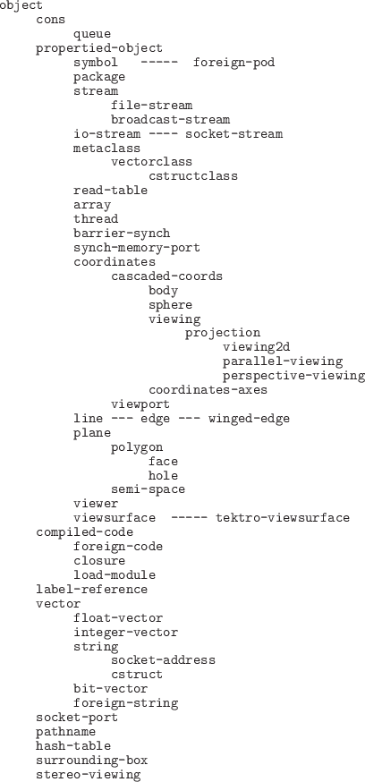p1)(p3p1))が
*coplanar-threshold*より小さければ、p1-p3の線分の上に
p2を投影したときのパラメータを返す。そうでなければ、NILを返す。
find-coplanar-vertices p1 p2 p3 vlist [関数]
-
-
p1, p2, p3は、3次元の実数ベクトルで、この3つのベクトルから平面を表現している。
find-coplanar-verticesは、その平面内にある点を
vlistの中から捜す。
find-connecting-edge vertex edgelist [関数]
-
-
vertexに接続されたedgelistの中からエッジを捜す。
make-vertex-edge-htab bodfacs [関数]
-
-
bodfacsは、bodyあるいはfaceのリストである。
make-vertex-edge-htabは、bodfacsの中の頂点を抽出し、それに接続されるエッジの検索ができる
ハッシュテーブルを作る。
left-points points p1 p2 normal [関数]
-
-
points, p1, p2は、正規化ベクトルnormalで表現される
平面内にあるものと仮定する。
left-pointsは、p1, p2間の線分の左側に置かれている点を
pointsの中から捜し、集める。
right-points points p1 p2 normal [関数]
-
-
points, p1, p2は、正規化ベクトルnormalで表現される
平面内にあるものと仮定する。
right-pointsは、p1, p2間の線分の右側に置かれている点を
pointsの中から捜し、集める。
left-most-point points p1 p2 normal [関数]
-
-
points, p1, p2は、正規化ベクトルnormalで表現される
平面内にあるものと仮定する。
left-most-pointsは、p1, p2で決定される線分の左側に置かれている点を
pointsの中から捜し、その中でもっとも遠い点を返す。
right-most-point points p1 p2 normal [関数]
-
-
points, p1, p2は、正規化ベクトルnormalで表現される
平面内にあるものと仮定する。
right-most-pointsは、p1, p2で決定される線分の右側に置かれている点を
pointsの中から捜し、その中でもっとも遠い点を返す。
eps= num1 num2 [(tolerance *epsilon*)] [関数]
-
-
2つの実数num1とnum2を比較して、torelanceの誤差範囲内で
等しいかどうかを返す。
eps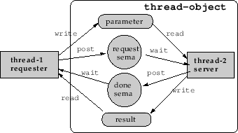 num1 num2 [(tolerance *epsilon*)] [関数]
-
-
num1が明らかにnum2よりも小さいときTを返す。すなわち、
num1num2-toleranceである。
eps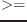 num1 num2 [(tolerance *epsilon*)] [関数]
-
-
num1が多分num2よりも小さいときあるいは等しいときTを返す。すなわち、
num1num2+toleranceである。
eps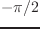 num1 num2 [(tolerance *epsilon*)] [関数]
-
-
num1が明らかにnum2よりも大きいときTを返す。すなわち、
num1num2+toleranceである。
eps num1 num2 [(tolerance *epsilon*)] [関数]
-
-
num1が多分num2よりも大きいときあるいは等しいときTを返す。すなわち、
num1num2-toleranceである。
bounding-box [クラス]
:super object
:slots (minpoint maxpoint)
-
- xy-,yz-やzx-平面に平行な面を境界とする最小の四角柱を定義する。
bounding-boxは、初期に与えられるベクトルの次元によって、
どんな次元でも使用することができる。
bounding-boxは、surrounding-boxの名前で定義されていた。
:box [メソッド]
-
- このbounding-boxのオブジェクト自身を返す。
:volume [メソッド]
-
- このbounding-boxの体積を返す。
:grow rate [メソッド]
-
-
このbounding-boxのサイズをrate率で増加または減少させる。
rateが0.01のとき、1%拡大される。
:inner point [メソッド]
-
-
pointがこのbounding-box内にあればTを返し、
そうでないときはNILを返す。
:intersection box2 &optional tolerance [メソッド]
-
-
このbounding-boxとbox2との共通bounding-boxを返す。
もし、torelanceが与えられたならば、このboxはその誤差で拡大される。
もし、共通部分がなければ、NILを返す。
:union box2 [メソッド]
-
-
このbounding-boxとbox2を結合したbounding-boxを返す。
:intersectionp box2 [メソッド]
-
-
このbounding-boxとbox2との間に共通領域があればTを返し、
そうでなければNILを返す。
このメソッドは、:intersectionよりも速い。なぜなら、新しい
bounding-boxのインスタンスを作らないためである。
:extreme-point direction [メソッド]
-
-
このbounding-boxの８つの頂点の中で、directionとの内積が最大のものを
返す。
:corners [メソッド]
-
-
このbounding-boxのすべての頂点のリストを返す。
もし、このboxが2次元であれば、4点が返される。
同様に3次元の場合、8点が返される。
:below box2 &optional (direction #(0 0 1) [メソッド]
-
-
このbounding-boxがbox2に対してdirectionの示すベクトル
の下の方向にあればTを返す。
このboundign-boxがdirectionの方向に動かされるとき、
2つのboxに共通部分でできるかどうかをチェックするために使用される。
:body [メソッド]
-
-
このbounding-boxによって内包される立方体を表現する
bodyを返す。
:init vlist &optional tolerance [メソッド]
-
-
minpointとmaxpointスロットをvlistから設定する。
もし、torelanceが指定されたなら、このbounding-boxは
その量で増大される。
make-bounding-box points [tolerance] [関数]
-
-
pointsのリストの中から最小と最大の座標値を見つけ、
bounding-boxのインスタンスを作る。
bounding-box-union boxes [tolerance *contact-threshold*] [関数]
-
-
boxesの結合で表現されるbounding-boxのインスタンスを作る。
その結果は、toleranceによって拡張される。
bounding-box-intersection boxes [tolerance *contact-threshold*] [関数]
-
-
boxesの共通領域を表現するbounding-boxのインスタンスを作る。
その結果は、toleranceによって拡張される。
頂点の順番やエッジの順番の向きは、bodyを外から見たときに反時計方向
に整列するように定義される。
pvertexやnvertexやpfaceやnfaceは、
pfaceが外から見たときエッジの左側に位置しているとき、
pvertexからnvertexに向かう方向にエッジを定義する。
line [クラス]
:super propertied-object
:slots ((pvert :type floatvector)(nvert :type floatvector))
-
- pvertとnvertの上を通る線分を定義する。
線分は、pvertからnvertに向かう方向を持つ。
t pvert +(1-t)nvert
:vertices [メソッド]
-
- pvertとnvertのリストを返す。
:point p [メソッド]
-
-
この線分の上でpパラメータで示される位置の3次元のベクトルを返す。
p pvert + (1-p)nvert
:parameter point [メソッド]
-
-
この線分の上のpointに対するパラメータを計算する。
これは、:pointメソッドの逆メソッドである。
:direction [メソッド]
-
-
pvertからnvertへ向かう正規化ベクトルを返す。
:end-point v [メソッド]
-
-
この線分の他の端点を返す。すなわち、
もしvがpvertに等しいとき、nvertを返す。
もしvがnvertに等しいとき、pvertを返す。
それ以外のとき、NILを返す。
:box [メソッド]
-
- この線分のbounding-boxを作成し、返す。
:boxtest box [メソッド]
-
-
boxとこの線分のbounding-boxの共通部分をチェックする。
:length [メソッド]
-
- この線分の長さを返す。
:distance point-or-line [メソッド]
-
-
この線分とpoint-or-lineの間の距離を返す。
もし点からこの線分におろした垂線の足が
pvertとnvertの間になければ、
最も近い端点までの距離を返す。
このメソッドを使うことにより、2つの線分の間の距離を計算することができるため、
2つの円柱の間の干渉をテストすることができる。
:foot point [メソッド]
-
-
pointからこの線分へおろした垂線の足である点を示すパラメータ
を見つける。
:common-perpendicular l [メソッド]
-
-
この線分とlとに垂直な線分を見つけ、2つの3次元ベクトルのリスト
として返す。
2つの線分が平行で共通な垂線が一意に決定できないとき、:parallelを返す。
:project plane [メソッド]
-
-
planeにpvertとnvertを投影した2つの点のリストを返す。
:collinear-point point &optional (tolerance *coplanar-threshold*) [メソッド]
-
-
collinear-pを用いてtorelanceの誤差範囲内でpointがこの線分と
一直線上にあるかどうかをチェックする。
もし、pointがこの線分と一直線上にあるとき、その線分のその点に
対するパラメータを返す。そうでなければ、NILを返す。
:on-line-point point &optional (tolerance *coplanar-threshold*) [メソッド]
-
-
pointがこの線分と一直線上にあり、pvertとnvertとの間に
あるかどうかをチェックする。
:collinear-line ln &optional (tolerance *coplanar-threshold*) [メソッド]
-
-
lnがこの線分と共通線上にあるとき、すなわちlnの両端がこの線分上に
あるときTを返し、そうでないときNILを返す。
:coplanar ln &optional (tolerance *coplanar-threshold*) [メソッド]
-
-
lnとこの線分が共通平面上にあるかどうかをチェックする。
この線分の両端とlnの1つの端点で平面が定義される。
もし、lnの他の端点がその平面上にあるとき、Tを返す。
そうでなければ、NILを返す。
:intersection ln [メソッド]
-
-
lnは、この線分と共通平面上にあるとする。
:intersectionは、これら2つの線分の交点に対する2つのパラメータの
リストを返す。
パラメータは0から1までの実数である。これは、両端で区切られた
線分の内分点を示す。2つの線が平行であるときNILを返す。
:intersect-line ln [メソッド]
-
-
lnは、この線分と共通平面上にあるとする。
交点のパラメータが:parallel, :collinearや:intersectのような
シンボル情報と共に返される。
edge [クラス]
:super line
:slots (pface nface
(angle :type float)
(flags :type integer))
-
- 2つの面の間の交差線分として定義されるエッジを表現する。
pfaceとnfaceがスロットの中に定義されているが、
それらの解釈はこのエッジの方向によって相対的に決まる。
例えば、このエッジがpvertからnvertに向かっていると
考えたとき、pfaceが正しいpfaceを表現している。
そのため、:pfaceや:nfaceメソッドで適当な面を選択するためには、
pvertとnvertの解釈を与えなければならない。
make-line point1 point2 [関数]
-
-
point1をpvertとし、point2をnvertとする
lineのインスタンスを作る。
:pvertex pf [メソッド]
-
-
pfをこのエッジのpfaceとみなしたpvertexを返す。
:nvertex pf [メソッド]
-
-
pfをこのエッジのpfaceとみなしたnvertexを返す。
:body [メソッド]
-
- このエッジを定義するbodyオブジェクトを返す。
:pface pv nv [メソッド]
-
- 仮想的にpvとnvをこのエッジの
pvertとnvertに解釈したときのpfaceを返す。
:nface pv nv [メソッド]
-
- 仮想的にpvとnvをこのエッジの
pvertとnvertに解釈したときのnfaceを返す。
:binormal aface [メソッド]
-
-
このエッジとafaceの正規化ベクトルに垂直な方向ベクトルを見つける。
:angle [メソッド]
-
-
このエッジでつながった2つの面の間の角度を返す。
:set-angle [メソッド]
-
-
このエッジでつながった2つの面の間の角度を計算し、
それをangleスロットに置く。
:invert [メソッド]
-
-
:set-face pv nv f [メソッド]
-
-
fをpfaceとし、pvをpvertexとし、nvを
nvertexとして設定する。
このメソッドは、このエッジのpfaceあるいはnfaceを変更することに
注意すること。
:contourp viewpoint [メソッド]
-
-
もし、このエッジが輪郭エッジであれば、すなわち、このエッジのpface
あるいはnfaceのどちらかがviewpointから見え、もう一方が
見えないならTを返す。
:approximated-p [メソッド]
-
-
このエッジが円柱の側面のような曲面を表現するための近似エッジであるならば、
Tを返す。
近似エッジは部分直線で曲線を表現するのに必要である。
:set-approximated-flag &optional (threshold 0.7) [メソッド]
-
-
Euslispでは、どんな曲面もたくさんの平面で近似される。
flagsのLSBは、このエッジの両側の面が曲面であるかどうかを
示すために使用される。
もし、2つの面の間の角度がthresholdより大きいなら、
:set-approximated-flagは、このフラグをTに設定する。
:init &key :pface :nface :pvertex :nvertex [メソッド]
-
-
planeオブジェクトは、その平面の正規化ベクトルと座標原点から平面までの
距離で表現される。
2対の正規化ベクトルと距離がplaneオブジェクトに記録される。
1つは、変換後の現状を表現し、もう1つが平面を定義したときの
正規化ベクトルと距離を表現する。
plane [クラス]
:super propertied-object
:slots ((normal :type float-vector)
(distance :float))
-
- 平面方程式を定義する。平面は境界がなく、無限に広がっているものとする。
:normal [メソッド]
-
-
この平面の正規化ベクトルを返す。
:distance point [メソッド]
-
-
この平面とpointとの間の距離を計算する。
:coplanar-point point [メソッド]
-
-
もし、pointがこの平面の上に置かれているならTを返す。
:coplanar-line line [メソッド]
-
-
もし、lineがこの平面の上に置かれているなら、Tを返す。
:intersection point1 point2 [メソッド]
-
-
point1とpoint2を端点とする線分とこの平面との交点
を計算する。その線分の上の交点に対するパラメータを返す。
もし、線分とこの平面が平行であるなら、:parallelを返す。
:intersection-edge edge [メソッド]
-
-
この平面とpoint1とpoint2で表現される線分あるいはエッジとの
交点のパラメータを返す。
:foot point [メソッド]
-
-
この平面上にpointを直角に投影した位置の３次元ベクトルを返す。
:init normal point [メソッド]
-
-
pointを通りnormalを面の正規化ベクトルとする平面を定義する。
normalは、正規化されていなければならない。
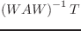
polygon [クラス]
:super plane
:slots (convexp edges vertices
(model-normal float-vector)
(model-distance :float))
-
- polygonは、平面の上の輪で表現される。
convexpは、その輪が凸面であるかどうかを示す論理フラグである。
edgesは、この輪の輪郭や頂点のリストであるverticesで
形成されるエッジのリストである。
:box &optional tolerance [メソッド]
-
-
この多角形のためのbounding-boxを返す。
:boxtest box2 &optional tolerance [メソッド]
-
-
この多角形のためのbounding-boxを作成し，
そのboundign-boxとbox2との共通領域を返す。
もし，共通領域がなかった場合，NILを返す。
:edges [メソッド]
-
-
この多角形のエッジのリストを返す。
そのリストは，この平面の正規化ベクトルに沿ってその多角形を見たとき，
時計方向の順番になっている。
もし，正規化ベクトルをねじと考えると，そのエッジは
ねじを入れる方向に回転させる向きの順番になっている。
多角形または面が立体オブジェクトの面を表現するために使用されているとき，
その正規化ベクトルはその立体の外側に向かっている。
多角形をそのオブジェクトの外側から見たとき，エッジは
反時計方向の順番になっている。
:edge n [メソッド]
-
- エッジのn番目の要素を返す。
:vertices [メソッド]
-
-
この多角形の頂点をエッジと同じ順番にならべたものを返す。
最初の頂点は，そのリストの最後に重複してコピーされているため，
そのリストは実際の頂点の数より１だけ長くなっていることに注意すること。
これは，頂点のリストを用いてエッジへの変換を簡単にするためである。
:vertex n [メソッド]
-
- 頂点のn番目の要素を返す。
:insidep point &optional (tolerance *epsilon*) [メソッド]
-
-
この領域に対して相対的に置かれたpointの位置にしたがって
:inside,:outsideあるいは:borderを返す。
:intersect-point-vector point vnorm [メソッド]
-
-
pointと正規化方向ベクトルvnormによって定義される
擬似線分との交点を計算する。
:intersect-line p1 p2 [メソッド]
-
-
p1とp2で指定される線分との交点を計算する。
その結果は、交点がなければNILを返し，交点があればその交点の位置の
パラメータのリストを返す。
:intersect-edge edge [メソッド]
-
-
edgeで指定される線分との交点を計算する。
その結果は，交点がなければNILを返し、交点があれば
交点の位置のパラメータのリストを返す。
:intersect-face aregion [メソッド]
-
-
もし，この領域がaregionと交差しているなら，Tを返す。
:transform-normal [メソッド]
-
-
:reset-normal [メソッド]
-
-
この多角形の現在のverticesリストから面の正規化ベクトルを再計算する。
:invert [メソッド]
-
-
:area [メソッド]
-
- この領域の面積を返す。
:init &key :vertices :edges :normal :distance [メソッド]
-
-
face [クラス]
:super polygon
:slots (holes mbody primitive-face id)
-
- 穴を持った面を定義する。
mbodyとtypeは、基本bodyとbody内の面の属性(:top, :bottom, :side)
を表現する。
:all-edges [メソッド]
-
-
:all-vertices [メソッド]
-
-
この面および内部ループ（穴）の輪郭のエッジあるいは頂点をすべて返す。
:edgesと:verticiesメソッドは，
輪郭を構成するエッジと頂点のみを返す。
:insidep point [メソッド]
-
-
pointがこの面の内部にあるかどうかを決定する。
もしpointがこの面の外側の輪郭の中にあり，どれかの穴の
範囲内にあるならば，外側として分類される。
:area [メソッド]
-
-
この面の面積を返す。
これは，外側のエッジで囲まれる面積から穴の面積を引いたものである。
:centroid &optional point [メソッド]
-
-
この面の重心を表現する実数と実数ベクトルのリストを返す。
もし，pointが与えられないならば，最初の数はこの多角形の
面積を表わし，2番目のベクトルがこの多角形の重心の位置を示す。
もし，pointが与えられたならば，この多角形を底面としその点を頂点
とするような多角錐を考え，その体積と重心のベクトルを返す。
:invert [メソッド]
-
-
この面の向きをひっくり返す。
正規化ベクトルが逆方向とされ，エッジループの順番も反転される。
:enter-hole hole [メソッド]
-
-
この面に穴holeを加える。
:primitive-body [メソッド]
-
-
この面を定義する基本bodyを返す。
:id [メソッド]
-
-
(:bottom), (:top)や(:side seq-no.)の中の1つを返す。
:face-id [メソッド]
-
-
基本bodyの型とこの面の型をリストで返す。
例えば，円柱の側面は
((:cylinder radius height segments) :side id)を返す。
:body-type [メソッド]
-
-
この面を定義する基本bodyを返す。
:init &key :normal :distance :edges :vertices :holes [メソッド]
-
-
hole [クラス]
:super polygon
:slots (myface)
-
- 穴は，面の内部ループを表現する多角形である。faceのオブジェクトは、
自分のholesスロット
の中にholeのリストを持っている。
:face [メソッド]
-
- このholeを含む面を返す。
:enter-face face [メソッド]
-
-
このholeを囲んでいる面faceへリンクを作る。
このメソッドは、faceクラスの:enter-holeメソッドと共に
使用されるものである。
:init &key :normal :distance :edges :vertices :face [メソッド]
-
-
body [クラス]
:super cascaded-coords
:slots (faces edges vertices model-vertices box convexp evertedp csg)
-
- ３次元形状を定義する。
:magnify rate [メソッド]
-
-
このbodyのサイズをrateで変更する。拡大は，csgリストの中に
記録される。
:translate-vertices vector [メソッド]
-
-
モデルの頂点を相対移動する。vectorはローカル座標系で与えられなければならない。
変換はcsgリストに記録される。
:rotate-vertices angle axis [メソッド]
-
-
モデルの頂点をaxis軸回りにangleラジアン回転させる。
回転はcsgリストに記録される。
:reset-model-vertices [メソッド]
-
-
:newcoords rot &optional pos [メソッド]
-
-
座標系をrotやposを用いて変更する。
posが省略された時はnewrotにはcoordinatesのインスタンスを与える。
:vertices [メソッド]
-
- このbodyのすべての頂点のリストを返す。
:edges [メソッド]
-
- このbodyのすべてのエッジのリストを返す。
:faces [メソッド]
-
-
このbodyを構成するすべての面のリストを返す。
:box [メソッド]
-
- このbodyのbounding-boxを返す。
:Euler [メソッド]
-
-
このbodyのオイラー数を計算する。これは，
faces+verticesedges2holesである。
これは，2ringsと等しくなるべきである。
:perimeter [メソッド]
-
-
すべてのエッジの長さの合計を返す。
:volume &optional (reference-point #f(0 0 0)) [メソッド]
-
-
このbodyの体積を返す。
:centroid &optional (point #f(0 0 0) [メソッド]
-
-
このbodyが均質な立体と仮定し，重心の位置を返す。
:possibly-interfering-faces box [メソッド]
-
-
:common-box body [メソッド]
-
-
このbodyと他のbodyの共通な最小のboxを返す。
もし，2つのbodyが干渉しているならば，その交差部分は
この共通boxの中に存在するはずである。
:insidep point [メソッド]
-
-
もし，pointがこのbodyに属するなら，:insideを返す。
もし，pointがこのbodyの表面上にある場合，:borderを返す。
そうでなければ，:outsideを返す。
:intersect-face face [メソッド]
-
-
もし，このbodyの面とfaceの間に干渉がある場合，Tを返す。
:intersectp body [メソッド]
-
-
このbodyと他のbodyとの間の交差部分を返す。
:evert [メソッド]
-
- すべての面とエッジの方向を反転させる。
そのため，このbodyの内部は外部になる。
:faces-intersect-with-point-vector point direction [メソッド]
-
-
pointからdirectionの方向に伸びるベクトルと交差する面をすべて集める。
:distance target [メソッド]
-
-
targetは，実数ベクトルあるいは平面オブジェクトである。
:distanceメソッドは，targetから最も近い面を見つけ，
その面と距離のリストを返す。
:csg [メソッド]
-
-
bodyが構築された履歴であるcsgスロットを返す。
:primitive-body [メソッド]
-
-
このbodyを構築する基本bodyのリストを返す。
:primitive-body-p [メソッド]
-
- もし，このbodyが14.5
節で示される関数の内の1つから作られた基本bodyであるなら，Tを返す。
:creation-form [メソッド]
-
-
このbodyを作るためのLisp表現を返す。
:body-type [メソッド]
-
-
もし，このbodyが基本bodyあるいはこのbodyの表現が複雑（に構成された）
bodyなら，作成パラメータのリストを返す。
:primitive-groups [メソッド]
-
-
2つの要素をもつリストを返す。
最初の要素は，このbodyを構成するために追加(body+)された基本body
のリストである。次の要素は，差し引かれた基本bodyのリストである。
:get-face body &optional face id [メソッド]
-
-
bodyは，このbodyを構成しているbodyのインスタンスであり，
基本body型の1つである。例えば，:cube, :prism, :cone, :solid-of-resolutionなどか
あるいはNILである。
もし，faceもidも与えられないならば，bodyに一致する面をすべて返す。
もし，faceが与えられたなら，その上にフィルターが実行される。
faceは，:top,:bottomと:sideの内の1つでなければならない。
(send abody :get-face :cylinder :top)は，abodyを構成する円柱の上面すべてを返す。
もし，faceが:sideなら，idで番号付けされた面を取り出すことができる。
(send abody nil :side 2)は，idが0から始まるため，abodyを構成する
bodyの側面から３番目の面をすべて返す。
:init &key :faces :edges :vertices [メソッド]
-
-
:facesよりこのbodyを初期化する。
:facesは，必要な引き数である。
:faces,:edgesと:verticesは完全な立体モデルを定義するために
矛盾のない関係を持っていなければならないので，矛盾した引き数でこのメソッドを
呼び出すことは，意味の無いことである。
bodyを作るために，14.5節で書いている基本bodyの作成関数と
14.6節のbody合成関数を使用する。
:constraint b [メソッド]
-
- このbodyがbに接触しているとき，
このbodyの拘束を返す。このメソッドの詳細な説明は14.8節を参照すること。
基本bodyの作成関数
make-plane &key :normal :point :distance [関数]
-
-
pointを通り，normalの方向を向いたplaneオブジェクトを作る。
pointを与える代わりdistanceを指定することもできる。
*xy-plane* [変数]
-
-
*yz-plane* [変数]
-
-
*zx-plane* [変数]
-
-
make-cube xsize ysize zsize &key :name :color [関数]
-
-
x,y,z軸の方向に大きさがxsize,ysize,zsizeである，直方体を作る。
この直方体の原点はbodyの中心に置かれる。
make-prism bottom-points sweep-vector &key :name :color [関数]
-
-
sweep-vectorに沿ったbottom-pointsにより定義される
形状を積み上げることにより角柱を作る。
もし、sweep-vectorが実数ベクトルでなく数字であれば、方向の
角柱の高さとして扱われる。
bottom-pointsは，このbodyの底面を定義する順番になっていなければならない。
例えば，
(make-prism '(#f(1 1 0) #f(1 -1 0) #f(-1 -1 0) #f(-1 1 0)) 2.0)
は，高さ2.0の直方体を作る。
make-cylinder radius height &key (:segments 12) :name :color [関数]
-
-
半径radiusと高さheightで指定される円柱を作る。
底面は，xy-平面に定義され，座標系の原点は底面の中心に置かれる。
make-cone top bottom &key (:segments 16) :color :name [関数]
-
-
頂点がtopで底面がbottomである角錐を作る。
topは，3次元ベクトルである。
bottomは，底面の頂点のリストあるいは半径である。
もし，頂点のリストなら，順番を慎重にしなさい。
(make-cone #f(0 0 10) (list #f(10 0 0) #f(0 10 0) #f(-10 0 0)
#f(0 -10 0))) は，正方形の底面を持つ四角錐を作る。
make-solid-of-revolution points &key (:segments 16) :name :color [関数]
-
-
pointsは，z軸まわりの時計方向に回転される。
もし、pointsのリストの2つの端点がz軸上に置かれてないならば，
曲面を作る。したがって，
(make-solid-of-revolution '(#f(0 0 1) #f(1 0 0)))
は、円錐を作り、
(make-solid-of-revolution '(#f(1 0 1) #f(1 0 0)))
は、円柱を作る。
pointsは、順番が重要であり、軸の高い方から低い方へ
整列しておくことが望まれる。
make-torus points &key (:segments 16) :name :color [関数]
-
-
ドーナッツのようなtorus形状を作る。
pointsは，断面上の頂点のリストである。
make-icosahedron &optional (radius 1.0) [関数]
-
-
正20面体を作る。それぞれの面は正三角形である。
make-dodecahedron &optional (radius 1.0) [関数]
-
-
正12面体を作る。それぞれの面は，正五角形である。
make-gdome abody [関数]
-
-
abodyの三角面を4つの面に小分けすることにより
測地ドームを新しく作る。
abodyは，最初正20面体とすべきである。
それから，make-gdomeの結果を再帰的にmake-gdomeに与えることができる。
それぞれの呼び出しで，測地ドームの面の数は，4倍に増加する。すなわち，
20, 80, 320, 1280, 5120などになる。
(setq g0 (make-icosahedron 1.0)) ; 20 facets
(setq g1 (make-gdome g0)) ; 80 facets
(setq g2 (make-gdome g1)) ; 320 facets
...
grahamhull vertices &optional (normal #f(0 0 1)) [関数]
-
-
Grahamのアルゴリズムを用いて，2次元上で凸状の覆いを計算する。
quickhullよりも遅い。
quickhull vertices &optional (normal #f(0 0 1)) [関数]
-
-
2分探索法を用いて2次元上で凸状の覆いを計算する。
convex-hull-3d vertices [関数]
-
-
gift-wrapping法を用いて3次元上で凸面の覆いを計算する。
make-body-from-vertices vertices-list [関数]
-
-
矛盾しない順番になっている面のループを定義する頂点のリストからbodyを返す。
bodyの合成関数
face+ face1 face2 [関数]
-
-
face* face1 face2 [関数]
-
-
face1とface2は，3次元上で共通平面上にある。
face+は，これらの面の結合を構築し，面のオブジェクトとして返す。
もし，交差領域がないなら，元の2つの面が返される。
face*は，これらの面の交差領域を返す。もし，交差領域がなければ，NILを返す。
cut-body body cutting-plane [関数]
-
-
bodyをcutting-planeで切断し，その切断面に作られる面のリストを返す。
body+ body1 body2 &rest more-bodies [関数]
-
-
body- body1 body2 [関数]
-
-
body* body1 body2 [関数]
-
-
2つあるいはそれ以上のbodyの和，差あるいは積を計算する。
それぞれのbodyは，body+, body-, body*の処理を行う前に
コピーされ，元のbodyは変更されない。
その結果のbodyの新しい座標系の位置・姿勢は，ワールド座標系のものと一致している。
もし，しきい値パラメータ*coplanar-threshold*,*contact-threshold*,*parallel-threshold*
を正確に設定するなら，2つのbodyが面同士で接触している場合でも
これらの関数は正しく働くであろう。
しかしながら，もしbodyの頂点が他のbodyの頂点あるいは面に接触している場合，
どの処理も失敗する。
body/ body plane [関数]
-
-
make-planeで作られたplaneクラスのインスタンスであるplaneで
bodyを切断する。新しく作られたbodyが返される。
body-interference &rest bodies [関数]
-
-
bodiesの中で1対1の組み合わせにおける干渉をチェックし，
交差している2つのbodyのリストを返す。
coordinates-axesクラスは，画面上に表示可能な3次元座標軸を定義する。
それぞれの軸とz軸の頂点の矢印は，lineオブジェクトで定義される。
このクラスは，cascaded-coordsを継承しているので，
このクラスのオブジェクトは，bodyのような他のcascaded-coordsを元とする
オブジェクトに付けることができる。
このオブジェクトは，bodyの座標軸あるいは他の座標の相対座標系を見るために
使用される。
coordinates-axes [クラス]
:super cascaded-coords
:slots (size model-points points lines)
-
- 表示可能な3次元座標軸を定義する。
立体の接触状態解析
この節のメソッドおよび関数は、次のファイルに記述されている。
contact/model2const.l, contact/inequalities.l, contact/drawconst.l
constrained-motion c [関数]
-
- 拘束cを満たしている
動作のリストを返す。
constrained-force m [関数]
-
- 拘束されているbodyから
拘束しているbodyに加わる力を返す。mは、constrained-motion
から返される動作のリストである。
draw-constraint c [関数]
-
- 拘束cを描く。
draw-motion m a b [関数]
-
- aがbに接触しているときに
取り得る動作を描く。リターンキーを押すことにより描画を始める。
Example
;;
;; peg in a hole with 6 contact points
;;
(in-package "GEOMETRY")
(load "view")
(load "../model2const.l" :package "GEOMETRY")
(load "../inequalities.l" :package "GEOMETRY")
(load "../drawconst.l" :package "GEOMETRY")
(setq x (make-prism '(#f(50 50 0) #f(50 -50 0) #f(-50 -50 0) #f(-50 50 0))
#f(0 0 200)))
(setq x1 (copy-object x))
(send x1 :translate #f(0 0 -100))
(send x1 :worldcoords)
(setq a1 (make-prism '(#f(100 100 -150) #f(100 -100 -150)
#f(-100 -100 -150) #f(-100 100 -150))
#f(0 0 150)))
(setq ana (body- a1 x1))
(send x :translate #f(0 -18.30127 -18.30127))
(send x :rotate -0.523599 :x)
(send x :worldcoords)
(setq c (list (send x :constraint ana)))
(setq m (constrained-motion c))
(setq f (constrained-force m))
(hidd x ana)
(draw-constraint c)
(draw-motion m)
拘束の例を次の図で示す。図の小さな矢印は，ペグに対する拘束を示す。
Figure 11:
Constraints for a peg in a hole.
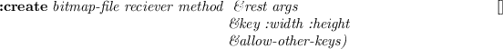
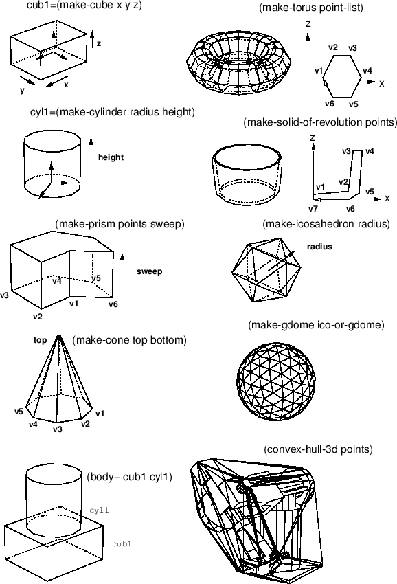
|
ペグを穴に入れる作業において取り得る動作の例を次の図で示す。
この例は，上記のプログラムと一致している。
Figure 12:
Possible motions of a peg in a hole
![\includegraphics[width=7.9cm]{fig/fig-peg-naname-m1.ps}](jmanual-img95.png)
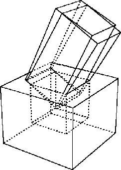
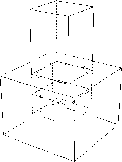
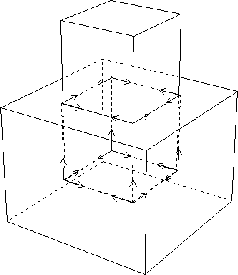
|
著者: Philippe PIGNON, 電総研ゲスト研究者
このプログラムは，Common Lispで書かれている。
"A sweepline algorithm for Voronoi diagrams", Proceedings of
the 2nd Annual ACM symposium on computational geometry, 1986, 313-322.を
手法として用い、
多角形の場合への応用を行った。これは，サンプルプログラム付きの簡単な説明である。
このプログラムは，ETLのEuslisp環境で書かれているため，
画像への出力もサポートしている。
どのCommon Lisp上でも使用することはできるが，
utilities.lで与えられている画像への関数を自分のディスプレイ環境へ
合うように書き換える必要がある。この節の最後にその関数を示す。
- 目的:
- 多角形の集合のvoronoi diagramの計算を行う。
語彙を理解するために上記の文献を読んで、使用してください。
ここでは、このプログラムに対する説明をしません。
- 入力:
- 多角形のリストと囲むための枠は，次のように定義する。
DATA= (
(x11 y11 x12 y12 x13 y13 ...) first polygon,
counterclocwise enumeration of vertices
(x21 y21 x22 y22 x23 y23 ...) second polygon
...
(xn1 yn1 xn2 yn2 xn3 yn3 ...) nth polygon
(xf1 yf1 xf2 yf2 xf3 yf3 xf4 yf4) enclosing frame
)
囲む枠は，DATA内のどの位置にも配置することができる。また，
内部と外部が矛盾しないように時計方向の順番でなければならない。
多角形は交差の無い簡単な図形でなければならない。
一直線あるいは平坦なエッジは受け付けない。
独立した点あるいは線分も受け付けない。
- 出力:
- *diagram*:2重に接続されたエッジリストのリスト
(utilities.lファイルを参照)を返す。それぞれのエッジは，symbolであり，次に示す
ようなfieldを含むproperty-listを持っている。
(start <pointer to a vertex>)
(end <pointer to a vertex>)
(pred <pointer to an edge>)
(succ <pointer to an edge>)
(left <pointer to a site>)
(right <pointer to a site>)
(type <:endpoint or :point-point or :segment-segment or :point-segment>)
(outflag <t or nil>)
vertexは，symbolで"pos"fieldを含むproperty-listを持つ。
このfieldは，cons(x,y)を含み，vertexの平面座標を示す。
predとsuccのfieldは，decl形式にしたがって反時計方向の
前者と後者を与える(ShamosとPreparataの,
Computational Geometry: An introduction, 1985, pp 15-17を参照)。
siteもsymbolであり，関連した情報を含むproperty-listを持つ。
siteは，元の入力データを記述しており，多角形の頂点であるpoint
あるいは多角形のエッジであるsegmentを持つ。
typeは，2等分線の中点であり，それを分割するsiteの型より
決定される。
規約により，外側はstart-endエッジの右側である。
voronoi diagramは，2等分線の内部と同様に外側を計算する。
必要とするoutflagを保つためにoutflagをソートする。
- サンプル:
- サンプルプログラムを実行するためには，以下のようなステップを実施してください。
- 自分の環境に以下のプログラムをコピーする。
| utilities.l |
幾何学ユーティリティ関数とeusxの画像出力関数 |
| polygonalvoronoi.l |
プログラム本体 |
| testdata.l |
上記の書式によるデモデータ |
- もし，Euslispを使用しないなら，命令にしたがってutilities.lを書き換え，
"compatibility package"を修正する。。
- 以下の3つのファイルをコンパイルしてロードするか、あるいはそのままロードする。
| utilities.l |
|
| polygonalvoronoi.l |
|
| testdata.l |
上記の書式によるデモデータを含んでいる。 |
- (pv demoworld)でデモデータ上でプログラムが実行される。
グローバル変数*diagram*には，voronoi diagramの2等分線が含まれている。
eusx(Xwindowインターフェースを持つEuslisp)のもとでは，以下の命令でdiagramの結果を画面上に表示することができる。
(make-display) ;;Initializes the *display* window object
(dps demoworld *thick*) ;; Shows original data in thick lines
(dbs *diagram*) ;; Shows the result
pv data [関数]
-
-
上記の書式で書かれたdataから多角形のvoronoi diagramを計算する。
Travis CI User
2017-03-07